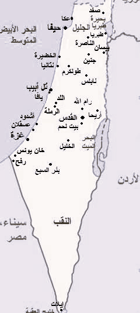

خارطة فلسطين قبل الاحتلال، وتقسيمها ما بعد الاحتلال

كانت سينما الحمراء المصورة هنا عام 1937 واحدة من عدة دور سينما فلسطينية في شارع جمال
باشا في يافا والتي يتم استخدامها الآن من قبل كنيسة السيانتولوجيا.
حارس أمن يقف خارج بوابة القنصلية المصرية في القدس عام 1947. المبنى حاليا مقر القنصلية اليونانية.
مستوطنون ينهبون منازل الفلسطينيين في قرية عين كارم على التلال الغربية للقدس في حرب عام 1948 وكانت
العصابات الصهيونية قد استولت على عين كارم في تموز / يوليو 1948 ، وطرد سكانها الفلسطينيين البالغ
عددهم 3200 نسمة.
تم بناء خط سكة حديد يافا إلى القدس عام 1892 في عهد الإمبراطورية العثمانية .
To Know More About Timeline of the Israeli-Palestinian conflict,
Click Here